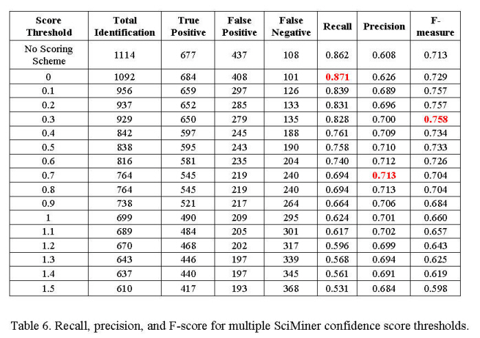
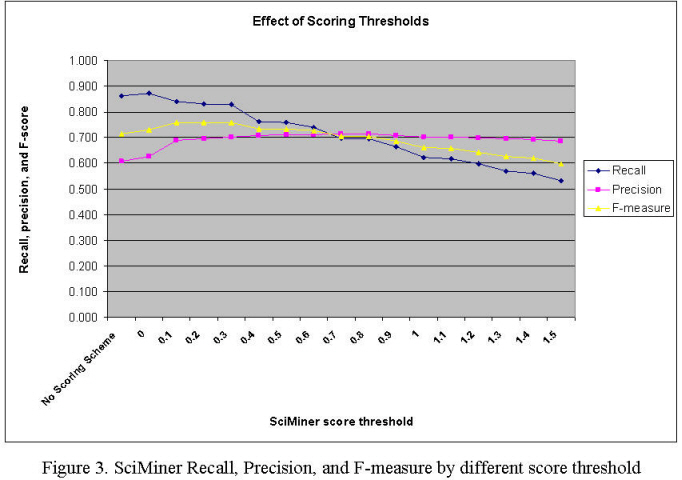
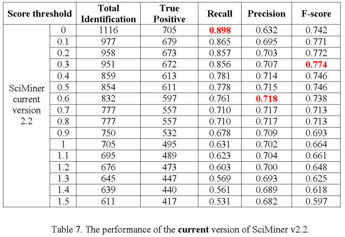

SciMiner Confidence Scoring Guide
This is a brief introduction to the SciMiner scoring system. For more details, please refer to the supplementary materials.
The same acronym can be shared by multiple distinct genes/proteins, which becomes a major obstacle in correctly recognizing abbreviated forms of gene names. To overcome this ambiguity issue, SciMiner uses a confidence scoring scheme based on the co-occurrence of abbreviated symbols and longer descriptions in the same document. Currently any match through the name dictionary is given a score of 1 and does not go through the name resolution process. For those matches through the symbol dictionary will be checked for co-occurrence of longer description (entries in the name dictionary and expanded forms). Scores will assigned to each match according to the rules described in the supplementary materials.
Performance evaluation by BioCreative II Gene Normalization Task
SciMiner's text mining performance was evaluated using the BioCreAtIvE (Critical Assessment of Information Extraction systems in Biology) II (Year 2006) Gene Normalization (GN) Task as a gold standard (Morgan, et al., 2008). The Gene Normalization task is to correctly identify the unique identifiers of genes and proteins mentioned in literature data. BioCreAtIvE II focused on identification of human genes and linking them to the NCBI Entrez Gene database. The gold standard set containing 785 human gene identifiers in a corpus of 262 abstracts was compiled by human experts for the task. Utilizing the SciMiner scoring scheme and optimally tuning the score threshold parameter for each of the evaluation measures result in maximum values of 87.1% recall (at score threshold of zero), 71.3% precision (at score threshold of 0.7), and 75.8% F-measure (at score threshold of 0.3). Compared to the 54 BioCreAtIvE II Gene Normalization Task results posted by 20 groups (Morgan, et al., 2008), SciMiner’s recall, precision and F-measure rank 2nd, 34th, 19th, respectively
Effect of different confidence score thresholds

Table 6 shows recall, precision, and F-scores with differentconfidence scores thresholds applied to SciMiner. SciMiner shows the highest recall at score threshold of zero, while F-score and precision are the highest at the thresholds of 0.3 and 0.6 respectively. Figure I illustrates the overall patterns of three measures above. Score threshold of 0.1 is mostly recommended for relatively good recall and precision. Higher score threshold will result in relatively high F-measure but lower recall rate. No matter what threshold score is used, users are strongly recommended to go over SciMiner results and correct wrong identification to improve the overall precision. Users' own EXCLUDE, INCLUDE, and IGNORE filteres can be used to improve the overall accuracy in later queries.

Table 7 below shows the performance of the CURRENT SciMiner. Note that Table 6 shows the performance without some rules that have been learned from testing on the BioCreative set.
